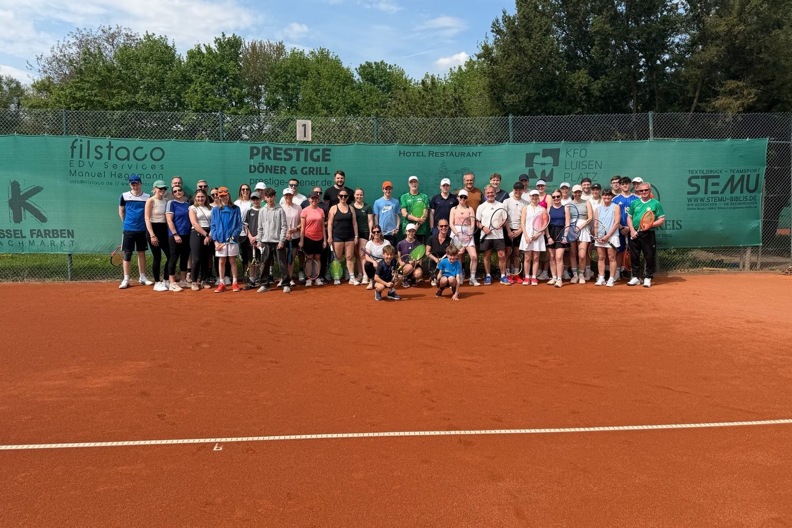
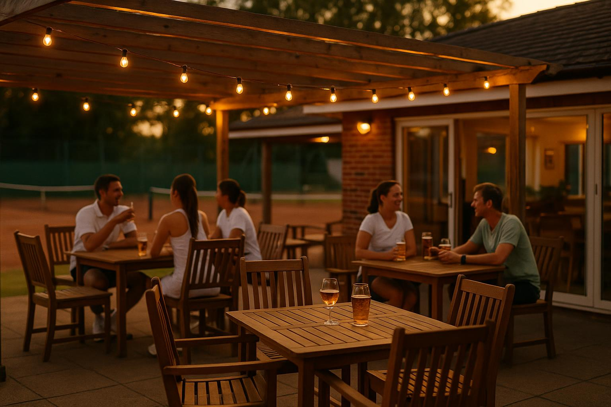

Sieben gepflegte Sandplätze, eine moderne 3-Feld-Tennishalle und ein gemütliches Clubhaus. Bei uns finden Mannschaftsspieler, Hobbyspieler und der Nachwuchs ihr sportliches Zuhause.
Vom ersten Schläger bis zum Punktspiel: Beim TC Biblis spielen Sie das ganze Jahr, drinnen wie draußen.

7 Freiplätze, moderne 3-Feld-Halle und Clubhaus mit Gaststätte „Zum Netzroller“.
Mehr erfahrenStrukturiertes Training, Kennenlernwochen und Events. Tennis von klein auf.
Zur JugendMedenspiele, Hobbyrunde und Winterpokal: Wettkampf für jede Altersklasse.
Teams ansehenEiner der modernsten Indoor-Tennisböden. Bequem online buchen, ganzjährig spielen.
Halle buchenUnser Team rund um Cheftrainerin Antonela Timmerbeil: Training für jedes Alter und jede Spielstärke.
Zum TrainingElf regionale Unternehmen unterstützen unsere Jugendförderung. Danke!
Partner ansehenDirekt in der Josef-Seib-Straße erwartet Sie eine Anlage, die Sport und Geselligkeit verbindet.
Nach dem Match wird es gesellig: Unser Clubhaus ist Treffpunkt für Mitglieder, Familien und Gäste.
Gemütlich einkehren nach dem Spiel, mit Blick auf die Plätze.
Vom Sommerfest bis zur Jugend-Übernachtung: Gemeinschaft das ganze Jahr.
Ein Verein, in dem sich Generationen treffen und wohlfühlen.

Treffpunkt ClubhausZum Saisonabschluss trafen wir uns am 19. September auf der Anlage: Schleifchenturnier ab 14 Uhr, am Abend die angekündigte Besonderheit und im Anschluss gemeinsames Essen. Danke an alle, die dabei waren.
Liebe Sponsoren, Gönner und Unterstützer der Tennisjugend Biblis: Durch eure Unterstützung können wir tolle Events wie das Übernachten der Kinder oder das Eltern-Kind-Turnier mit anschließendem Essen und Trinken realisieren.
Der TC Biblis hat wieder einmal einen Rekord aufgestellt! Beim diesjährigen Eltern-Kind-Turnier herrschte auf der Tennisanlage in Biblis reger Betrieb: Mehr als 80 Erwachsene und Kinder waren gemeinsam auf sieben Plätzen unterwegs und sorgten für einen tollen Nachmittag rund um den Tennissport.
Elf regionale Unternehmen unterstützen unsere Jugendarbeit.
Werden Sie Teil des TC Biblis 1973 e.V., ob als Mannschafts-, Hobby- oder Freizeitspieler. Wir freuen uns auf Sie.